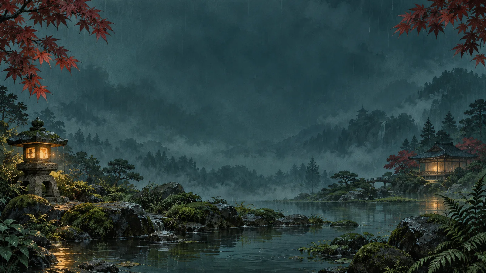

A LITTLE RAIN. A LITTLE READING.
Learn Japanese kana in the rain.
Kana Rain is a free browser arcade game for hiragana and katakana. Read falling kana, type their sounds, and build your score before time or hearts run out. Arcade challenge is the default; choose Steady practice in Settings for a constant pace. Your chosen style is saved.
Play Kana Rain →
How to play
- Choose a session. Begin with Hiragana and Arcade challenge, the default: timed rain, hearts, and scoring. Choose your difficulty and session length in Settings. Steady practice is an alternative with eight opportunities at a constant pace.
- Get ready. A three-second countdown gives you a moment to prepare. You can skip it.
- Read a drop and type its answer. Early answers use romaji, such as あ →
aor し →shi. Correct answers submit automatically. Press Enter to submit an ambiguous answer such asn. - Watch the answer format. The label tells you when to use romaji, hiragana, or katakana. You can answer any visible drop; the highlighted one is the priority.
- Keep the rain clear. Arcade rain speeds up, and a drop reaching the ground costs a heart. Steady practice has no lost hearts; corrections wait for Continue practice.
| Difficulty | Hearts | Starting rain |
|---|---|---|
| Easy | 5 | Gentler |
| Normal | 3 | Steady |
| Hard | 1 | Faster |
Wrong answers show the reading. Arcade errors stain and accelerate the affected drop. In Steady practice, choose Continue practice after reviewing the correction. An ! badge warns when a drop approaches the ground. Pause with the Pause button or Escape; opening a game menu also pauses the session.
Grow your kana garden
You begin with the five hiragana vowels: あ い う え お. New kana initially show a reading hint. Each unlocked kana needs two independent first-answer successes and 85% accuracy on independent first answers. Reading help remains marked until a minute and two other items have passed. Earlier rows count too.
My Kana Garden shows estimated familiarity and next-row readiness. More practice modes unlock as your hiragana rows grow; Settings explains each requirement. Strong kana progress to producing the matching character in the other script, and readable little words introduce English meanings.
After a session, review cards show missed or mistaken kana with their readings. Tap a kana card to hear it, or choose Review these kana for a focused one-minute Arcade round or eight Steady practice opportunities, following your chosen style.
Hear it. Read it. Recall it.
Kana pronunciations use bundled, synthesized Japanese audio clips. Listen through lesson tiles, the target Listen button, and results review cards. Whole-word audio plays when the supplied bundle includes that exact word.
The interface and instructions are in English. You can mute pronunciation and effects, and enable Reduced effects in Settings for calmer decorative motion.
On phones, an integrated touch keyboard opens during play. Use its ABC/kana switch when answer formats differ. A physical Japanese keyboard is optional; the on-screen kana keyboard supports script matching.
Short sessions, saved progress
The game saves progress locally when browser storage is available. If saving fails, a persistent warning lets you export a backup while continuing to play. Arcade and Steady practice personal bests are kept separately. Your selected style is remembered. You can export your progress from My Kana Garden for a backup.
After the first online visit finishes preparing the offline garden, supported browsers can load the cached game and kana recordings without an internet connection. Wait for Your garden is ready offline on the main menu before relying on offline play.
Frequently asked questions
Can I start without knowing hiragana?
Yes. Begin with the vowel row in Arcade challenge. Initial reading hints and pronunciation tiles introduce the sounds; hints disappear as you begin recognizing them. Choose Easy for gentler rain and more hearts, or Steady practice in Settings for a constant pace.
When do katakana and the other modes unlock?
Katakana, mixed scripts, and script pairs unlock after the basic hiragana rows have opened. Little words become available when enough words can be read using your unlocked kana. Brief introductions explain small っ and long-vowel spellings before those words are practised. Settings shows the current requirements, and My Kana Garden shows which kana still need practice.
Do I need an account or an installation?
No account or installation is required. Open Kana Rain in a modern browser with JavaScript enabled. Keyboard and touch controls are built into the game.
Does progress follow me to another device?
Progress is saved in the browser used to play. Another browser or device has its own progress, and clearing site data can remove saved learning history. Export your progress from My Kana Garden if you want a backup.
Can I play offline?
The initial visit needs an internet connection so the game and audio can be cached. Once the main menu confirms that the garden is ready offline, supported browsers can play the cached game and recordings offline.
Can I pause without losing my session?
Yes. Pause freezes the session clock, falling drops, and time-based acceleration. Partially typed answers remain when you resume. Leaving the browser tab pauses automatically.
Is this a complete Japanese course?
Kana Rain focuses on recognizing and recalling kana, matching the two scripts, and reading a small set of words. Use it as reading practice alongside your wider Japanese study.